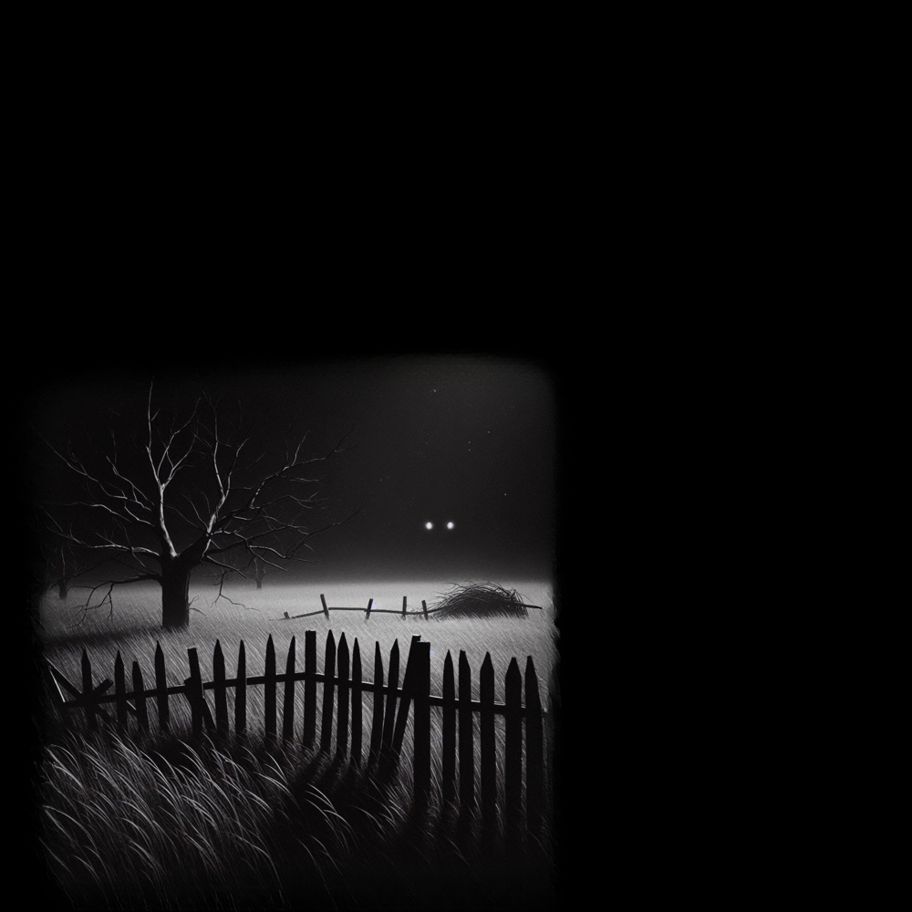

Cathode Reality Tales
Story 4- "The Lights"
(written by: Louis Anthony)
- - - -
In a dimly lit room, the only source of light is the flickering of an old television set casting eerie shadows along the walls. The screen crackles to life revealing a figure upon the screen shrouded in a haze of static and smoke. “Welcome, viewers, to Cathode Reality Tales.” The voice was smooth, almost hypnotic. The figure stepped closer, and the static resolved into the form of a middle-aged man dressed in a sleek, dark suit.
“Tonight,” the man continued, his eyes piercing through the screen, “we peel back the layers of your screen to reveal a world where reality twists and turns, and the familiar becomes the grotesque. I am your guide, Ray Toob. In the stillness of night, when every shadow whispers a secret, a man will find himself tormented by lights that defy reason.”
"Within the depths of fear and paranoia, where the boundary between reality and nightmare blurs, we will bravely seek possibly nonexistent answers.”
Ray paused, letting his words linger, “Prepare to attempt to unravel the mysteries of the mind with 'The Lights.'”
- - - -
Carter Chambers pulled up his long dirt driveway in his old red Henry pickup, the engine sputtering to a quiet halt. As he stepped out of his truck, the familiar scent of damp earth and fading wildflowers enveloped him, a bittersweet reminder of the home he had cultivated in solitude. The familiar stillness enveloped him, the world quiet except for the rustling leaves in the gentle breeze. He had returned from his supply run—a trek he made every three months to the small town that felt more distant each time.
The sun dipped low on the horizon, casting long shadows that danced among the overgrown grass and the dilapidated fence that surrounded his property. He trudged toward the barn, thoughts swirling in his mind. Today’s supply run had been uneventful, the small town a mere collection of faded faces and whispered gossip. He glanced toward the distant road, where the back of the old 1956 Cavalry Delaire Billboard stood, a distant tiny grey pixel suspended against the setting sun. He admired that old sign in his youth. A symbol of a time before his.
With a heavy sigh, he fed the goats, their soft bleating the only sound breaking the oppressive silence. As the sun vanished entirely, darkness seeped into every corner of the world and Carter settled in with a book and a cup of lukewarm tea. The shadows lengthened around him, and he noticed two lights in the distance. Perhaps he wouldn't have noticed them, except for the strange fact that the lights seemed to glow brighter the later it got, their eerie radiance seeping through the cracks of his worn windows. Their unsettling radiance seeping through the cracks of his worn windows, drawing his gaze like moths to a flame.
Curiosity gnawed at him. The lights pulsed rhythmically, but no car or truck passed on the distant road. It was odd; they seemed too big, too low, and too unsettling to be stars. Still they were too large and too high to be cars of people. They were around where the old sign should have been. He had seen that billboard before—its faded advertisement now obscured by foliage, but those lights had never been there. What had changed? Why would anyone put lights on the back of that old sign anyway?
He brushed the thought aside, attributing it to the isolation that enveloped him. But as the hours dragged on, the lights refused to fade, beckoning him to venture outside and unravel the mystery. With a sigh, he set down his book and grabbed a flashlight and a bottle of water.
Stepping onto the porch, the night air was thick with silence, interrupted only by the distant rustle of leaves. He walked toward the fence, heart pounding as the lights flickered in the distance, dancing up and down upon the horizon. Too close to be the sign, but still too far away to know what they were. Each step felt like an invitation into the unknown, and with each passing moment, he could feel the pull of the lights growing stronger.
As he approached the edge of his property, the darkness deepened, swallowing the sounds of the night. The lights loomed ahead, vibrant against the void, flickering in a way that felt almost sentient. He could feel an odd compulsion, a blend of fear and fascination, drawing him closer.
Carter crossed the threshold of the fence, the ground crunching beneath his boots. With each step, he scanned the area for signs of life or any rational explanation for the lights, but the world felt eerily empty. The barn, the animals, his home—all faded into the background as he focused on the glowing anomaly.
His flashlight beam swept across the tall grass, revealing the silhouettes of trees that framed his path. He remembered the old billboard, its faded colors, and peeling paint, but now all he could think about were the lights. They beckoned, pulsed, and danced, casting ghostly reflections in his eyes.
As he walked toward the distant road, the lights flickered erratically, teasing him with glimpses of their source. Was it merely the old sign? A trick of the light? Or something more sinister? Carter’s mind raced with possibilities, each more outlandish than the last, but he felt an undeniable urge to discover the truth.
Carter took a sip of his water but didn't take his eyes off the lights. He also didn't stop walking towards them and stumbled, spilling almost all of his water onto the ground. "Chickpeas," he exclaimed and capped his bottle to conserve what was left.
Carter continued walking all night, eyes fixed on the lights. The lights didn't seem to get any closer, but he swore that was just a trick of his mind. He knew he had to be getting closer. The problem was that he was also getting tired, and his house was starting to get so far away in the darkness.
As Carter drifted off, the pull of exhaustion was too strong to resist. He awoke the next afternoon, disoriented and confused. The sun hung high in the sky, casting long shadows that made everything look foreign. The house and the billboard were nowhere in sight, replaced by an eerie, silent landscape that felt both familiar and alien.
The sense of being caught in an anomaly gnawed at him. He felt like he was in a time slip, a space where reality had bent and twisted in inexplicable ways. He picked a direction, hoping it would lead him back home. As he walked, the hours dragged on, and the sense of disorientation grew.
As night fell once again, the lights reappeared, somehow closer but now behind him. Carter turned towards them, drawn by an irresistible compulsion. He walked, but the lights seemed to keep their distance, always just out of reach. Frustrated, he decided to walk away from them, hoping it would lead him home.
Morning came, and the lights faded with the dawn. Carter took the last sip of his water and found a random tree to take a nap under. He marked the direction he came from, hoping it would help him find his way when he woke up. His thoughts were a mix of fear, confusion, and determination to unravel the enigma that had become his life.
When he woke up later that day, Carter was relieved to see the markings still there. He continued in the right direction, thankful for his forethought. As the sun set, the tree vanished, swallowed by the night, and the lights reappeared, closer than ever, dancing menacingly behind him.
Dropping to his knees, he screamed as hallucinations of demonic fairies swarmed him, their biting stings feeling all too real. His vision blurred, his mind twisted by fear and exhaustion.
But it was just a mirage. When he blinked, the fairies disappeared, and the lights remained, still in the distance but unnervingly closer than before. Anger surged within him, burning hotter than the fear. He pushed himself up, starting towards the lights with a determined stride.
As the morning sun began to rise, his anger grew, fueling his steps until he was sprinting towards the lights, an unstoppable force driven by a mixture of fury and desperation. The lights flickered, mocking him with their elusive presence.
Pain.
In his right foot first.
Then his head as his equilibrium flew into a frenzy, his whole body flailing forward with a loss of control and nausea.
It was all he could do not to vomit before-
Pain.
Sharp, and piercing in his head and legs.
Carter's vision doubled. He took a deep breath and tried to clear it, but it slowly became red. Like someone had poured strawberry jam on his head. Carter blinked slowly and tried to stand up but his whole body hurt. He looked down to find his shin impaled by an old rusted piece of metal.
Carter laid back in the ravine and looked up at the sky. He saw the back of the old sign. Two holes had been cut or possibly shot out in it. As the sun rose, and Carter slowly faded unconscious he noticed some new lights on the bottom of the front of the sign as they turned off.
"When did those get there?" He thought to himself as he decided a nap sounded good, and closed his eyes for the last time.
Carter closes his eyes in the hole and the screen slowly pans up to reveal Ray Toob, standing in his suit on the other side of the bottom of the sign. Unlike usual where he is surrounded in the darkness as the world fades, this time the world persists as he speaks. His eyes bore into the camera, drawing viewers into his dark, compelling presence.
"And so, dear viewers, remember—what you perceive is but a fraction of the truth. In the realm of the Cathode Reality, illusions dance on the edge of perception, and what you seek might just consume you. Not all that glitters is gold, and not everything can be explained."
Ray’s gaze lingered, the static intensifying as he continued: "Until next time, keep your eyes open and your senses sharp. You never know what might be lurking just beyond the screen."
With a final, lingering glance, Ray Toob walked into the camera as the screen turned to see the billboard. The billboard shows a car cleverly using strategically placed holes and foliage to highlight its renovated look, before fading into the static leaving viewers with a chilling sense of unease and a reminder of the mysteries that lie just beyond their perception.
